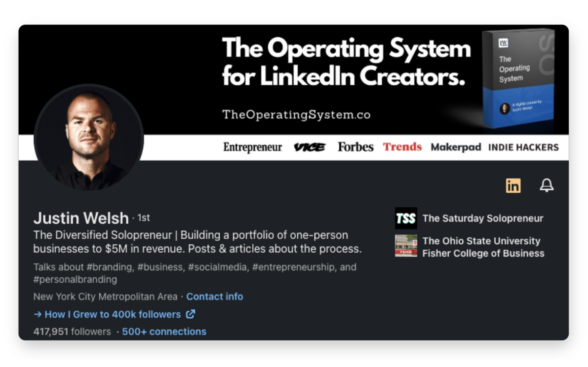

Establishing an unforgettable personal brand is no longer a nice-to-have.
It's a necessity in today's competitive world.
I've helped thousands of solopreneurs build their personal brands from the ground up, and I know the challenges and rewards that come with crafting a genuine and memorable identity.
So today I'm sharing seven essential steps to developing a distinct persona that positions you as a thought leader.
By following this roadmap, you'll discover what it takes to make a lasting impact.
Personal branding doesn't have to be complicated
Most entrepreneurs spend countless hours working on every aspect of their careers except for the biggest, arguably the most important, one: their personal brand.
Don't make the same mistake.
Building your personal brand doesn't have to be a difficult, time-consuming endeavor.
After all, the most successful personal brands thrive on simplicity and authenticity.
But most people overcomplicate the process. Then they end up with a diluted, inconsistent image that fails to resonate with their target audience.
Try this approach instead:
How to build your personal brand
- Learn about something that interests you
- Document the process and your learnings
- Share your founder story
- Talk about your wins and losses
- Deliver value and make a positive impact
- Engage with others to build a community
- Be consistent with your efforts
Step #1: Learn about something that interests you
Your personal brand shines when it's rooted in obsession.
Motivation and expertise naturally follow.
The cornerstone of building an influential personal brand is finding a subject you're passionate about:
Something you can talk about for days.
Something that will never feel like a drag.
Find your area of expertise
Begin by narrowing down your broad interests to a speciality. Your specific niche should be an intersection of your passion and skills and demand in the market.
Focusing on a well-defined niche will help you establish yourself as an authority and attract a dedicated audience.
When I began posting on LinkedIn in 2019, SaaS was my niche. SaaS companies turned to me for consulting services, and I made sure my content catered to them.
I've since evolved my personal brand.
Now, I'm a "diversified solopreneur" teaching people how to build their personal brands and make money online.

Consume relevant content
You may have heard Jim Rohn's famous quote:
"You're the average of the five people you spend the most time with."
In many ways, this idea applies here.
The more you learn from people smarter than you, the wiser you get.
Immerse yourself in your chosen field by consuming content from industry leaders and experts:
- Listen to podcasts
- Watch videos and webinars
- Attend conferences and workshops
- Read books, articles, and white papers
- Stay informed about the latest trends and breakthroughs
Learn from the best
Find thought leaders and influencers in your niche and follow their work. Engage with them on social media, ask questions, and participate in their online communities.
The best way to grow your presence online is to watch what successful people are doing and re-engineer, using your own spin.
Back in the day, I looked at successful creators' old posts.
This trick is golden, and here's why:
There's no point in emulating what they're doing now. If they're already popular, they can post about pretty much anything and get attention.
But if you go back and see what resonated with people before they got big, you’ll find a valuable lesson or two.
Use what you see as inspiration to craft content in your unique voice.
Don't be an echo; be you.
Practice and apply your knowledge
Put your newfound expertise to work by applying it in real-life situations.
Share your thoughts and knowledge by:
- Writing articles
- Creating videos
- Starting a podcast
- Sending newsletter emails
- Engaging in discussions and debates
- Offering your expertise to help others
The more you practice, the more you'll refine your skills and solidify your reputation.
Step #2: Document the process and your learnings
As you immerse yourself in your chosen niche, documenting your journey becomes a valuable way to grow your personal brand.
People can relate to you more when you share personal experiences and lessons learned.
Choose your medium
Select the content format that best suits your strengths and preferences.
For example, it could be blogging, podcasting, video creation, or making carousels.
Pick a medium that allows you to express yourself well.
For me, that's short, digestible text posts on LinkedIn and Twitter.
Use proven strategies
As you build your personal brand on social media, consider adopting proven strategies that have worked for others.
I developed a course, The Operating System.
In it, I detail my experience growing and monetizing an audience of 425K+ followers on LinkedIn. Today, 14K+ students are growing their LinkedIn presence with the system I used to generate $5M in revenue with zero paid ads.
It's one of many resources available, but it offers unconventional advice and tactics you may find helpful in your journey.
Create a content strategy
Develop your personal brand strategy, outlining the:
- Platforms where you'll share your work
- Topics you want to cover
- Keywords you'll target
- Posting frequency
This plan helps you stay organized and maintain a consistent output.
You'll notice increased engagement when your fans know exactly when they can expect updates from you.
Show your progress
Did you finish an industry-related certification or land a new freelance gig?
Was there a big obstacle that you recently overcame?
Share your accomplishments and milestones with your followers.
You'll inspire them to embark on their own journeys of discovery and personal development.
Plus, potential clients who see these posts will recognize your commitment to growth.
Step #3: Share your founder story
Your personal brand is more than your expertise and accomplishments.
It's also about your unique journey and the experiences that have shaped your personal life.
Sharing your founder story humanizes your brand and allows your audience to connect with you on a deeper level.
Identify your core narrative
Reflect on the key moments and experiences that have defined your journey.
Consider your motivations, challenges, and triumphs. Distill them into a compelling narrative that sums up your personal and professional growth.
Highlight your perspective
Your perspective is what makes you unique and adds value to your personal brand.
So emphasize the lessons you've learned and the expertise you've developed along the way. And don't shy away from discussing your struggles and failures. Those experiences can actually provide the most valuable lessons for your audience and make your story relatable to other people.
Infuse your story wherever you can
Besides social media posts, weave your founder story into blog posts, podcasts, and interviews.
Let people see and hear your story more than once. They'll get to know your mission and values.
Step #4: Talk about your wins and losses
A strong personal brand is built on authenticity and transparency. That means being open about your successes and your setbacks.
Celebrate wins
As mentioned earlier, don't be afraid to share your achievements with your fans. Invite them to celebrate with you.
This could be a significant milestone, a new collaboration, or an innovative solution to a problem.
Celebrating wins reinforces your expertise and shows dedication to your craft.
Acknowledge losses
Setbacks are inevitable as you learn and grow.
What comes out of discussing your challenges, losses, and lessons learned is incredible:
- You foster trust and relatability with your followers
- People see you as someone who is resilient and adaptable
Step #5: Deliver value and make a positive impact
The most enduring personal brands are those that deliver unmatched value and make a positive impact on their audience.
By publishing insightful content and fostering genuine connections, you'll create a personal brand that's respected and admired.
Here's how I deliver value to my community (and you can, too):
Identify your audience's needs
To deliver value, you must first understand your target audience's pain points and challenges.
Listen to their concerns, ask questions, and engage in conversations to gain insights into the areas where you can provide the most value.
Share your expertise generously
Freely share your knowledge, experiences, and resources with your community.
Offer valuable content without expecting anything in return.
People will see you as a trusted resource and an expert in your niche.
Create actionable content
The internet is cluttered with heaps of generic noise.
Stand out by producing content with practical, actionable advice that your audience can apply to their own journeys.
People will trust you when they recognize your interest in helping them succeed.
Step #6: Engage with others to build a community
Community is what holds people together during good times and bad.
Some of the best businesses I know survived wild economic downturns thanks to strong communities built around their brands.
Engaging with others and creating meaningful connections will keep your business top-of-mind when a need for your product or service arises.
Be active and accessible
Interact with your audience often and make them feel heard.
The pay-off is huge:
People start trusting you. Then, they buy from you.
Ask questions and encourage conversations
The best way to engage others is to ask questions and invite them to share their perspectives.
I welcome open dialogue by asking thought-provoking questions and encouraging my audience to talk about their thoughts and experiences.
This not only promotes engagement but also helps me better understand my community's needs and interests.
Collaborate with others
Seek opportunities to collaborate with other professionals in your space.
I've been a guest on business podcasts and partnered with companies to teach online workshops. These are just a couple of ways to expand your reach and strengthen your personal brand by association.
Recently, I've noticed more people having virtual or in-person "coffee chats" with others they've connected well with. This is a great way to take relationships to the next level and add an extra personal touch to your brand.
During coffee chats, you can bond over mutual interests, exchange business ideas, and discuss content strategy… the possibilities are endless.
Step #7: Be consistent with your efforts
The key to building a stellar personal brand lies in being consistent — not just in your message, but also in how you show up.
Maintain consistency across platforms
Make sure your message, tone, and style remain consistent across all platforms where you share content.
This bolsters your brand identity and makes it easier for your audience to recognize and connect with your content.
Show up regularly
Showing up "regularly" looks different for everyone.
For one person, it could be posting content 3X a week. For another, it could be posting daily.
Think about what is workable for you at the moment. Start there.
You can always adjust your content calendar later based on your capacity and career goals.
These days, you can find me posting twice a day on LinkedIn: once at 8:15 AM and again at 1:02 PM EST.
Start building your personal brand
With the right approach and persistence, you can grow a business brand that resonates with your target audience and supports your goals.
Here are the main takeaways to kickstart your personal branding efforts:
- Define your unique value proposition and target audience
- Choose a primary platform to focus on
- Create and share valuable content that highlights your expertise
- Engage with others to build a supportive community around your brand
- Be consistent, relatable, and authentic in your interactions
To further support your journey, I invite you to check out my two courses:
- The Operating System: My proven strategies for LinkedIn growth, audience engagement, and maximizing the potential of this untapped social media platform
- The Content Operating System: My best methods for creating quality content at scale and maintaining a sustainable posting schedule
That's my breakdown of how to build a personal brand.
Now, go make yours count.
I’m rooting for you.